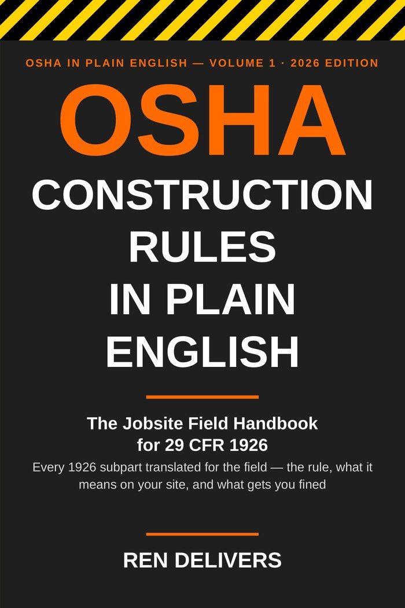

Short answer: At 6 feet. Under 29 CFR 1926.501(b)(1), every employee on a walking or working surface with an unprotected side or edge 6 feet or more above a lower level must be protected by guardrail systems, safety net systems, or a personal fall arrest system. Subpart M applies that same 6-foot trigger across most construction work at height — leading edges, hoist areas, holes, formwork, ramps and runways, and roofing. If your crew is 6 feet up with nothing between them and the edge, you need one of those three systems in place before work starts, not after somebody notices.
Falls are the leading cause of death in construction, and Subpart M is where OSHA writes the citations. The good news: the rule is mechanical. Height, system, anchor, inspection, training. Get those five right and you are most of the way home.
Where the 6-foot rule applies
Unprotected sides and edges — 1926.501(b)(1). The base rule: guardrails, safety nets, or a personal fall arrest system (PFAS) at 6 feet or more above a lower level.
Leading edges — 1926.501(b)(2). Workers building a leading edge at 6 feet or more get the same three options. If conventional fall protection is genuinely infeasible or creates a greater hazard, the employer needs a written, site-specific fall protection plan under 1926.502(k) — that is a documented exception, not a verbal one.
Holes — 1926.501(b)(4). Every employee on a walking or working surface must be protected from falling through holes 6 feet or more above lower levels, and from tripping or stepping into any hole — covers must be secured, marked, and able to carry the load.
Roofing. On low-slope roofs, 1926.501(b)(10) allows guardrails, nets, or PFAS, or combinations that add a warning line system and a safety monitoring system. On steep-slope roofs, (b)(11) requires guardrails with toeboards, safety nets, or a PFAS. Residential construction work at 6 feet or more is covered the same way under (b)(13).
Watch the neighboring rules. Scaffolds have their own 10-foot trigger in Subpart L, steel erection runs on Subpart R with its own heights and a controlled decking zone, and aerial lifts and ladders carry fall rules of their own. Subpart M is the general rule — check whether your task has a specific one before you default to it.
The three systems, and what each one demands
Guardrails — 1926.502(b). Top rail at 42 inches, plus or minus 3 inches, above the walking surface; midrails halfway; the top rail must withstand a 200-pound force applied in any outward or downward direction. Guardrails protect everybody on the deck without anyone tying off, which is why they are the first choice where they fit.
Safety nets — 1926.502(c). Installed as close as practicable under the work, and never more than 30 feet below the working level, extending out from the edge per the table in the rule. Nets are a specialty install — mesh, drop-testing, and clearance underneath all matter.
Personal fall arrest — 1926.502(d). The harness system, and the one with the most ways to get it wrong. The numbers that matter:
Anchor points: 5,000 pounds per worker. Under 1926.502(d)(15), anchorages must be capable of supporting at least 5,000 pounds per employee attached — or be designed, installed, and used under the supervision of a qualified person as part of a complete system maintaining a safety factor of at least two. A random pipe, a vent stack, or the guardrail is not an anchor. Use rated anchor connectors on structure that can carry the load.
Fall distance is capped. Under 1926.502(d)(16), the system must be rigged so the worker can neither free fall more than 6 feet nor contact any lower level, must stop the worker within a deceleration distance of 3.5 feet, and must not put more than 1,800 pounds of arresting force on a worker in a body harness. Add it up before you clip in: lanyard length, plus deceleration, plus the worker's body below the D-ring, plus a safety margin — a 6-foot lanyard setup needs roughly 18 feet of clear space below to do its job.
Components are rated too. Lanyards and vertical lifelines need a minimum breaking strength of 5,000 pounds (1926.502(d)(9)); D-rings and snaphooks must proof-test to 3,600 pounds without cracking or deforming (1926.502(d)(3)); snaphooks must be the locking type. The harness attachment point sits at the center of the back, near shoulder level (1926.502(d)(17)). Body belts are not fall arrest — they have been prohibited as part of a PFAS since 1998.
Rescue is part of the system. Under 1926.502(d)(20), the employer must provide for prompt rescue after a fall, or make sure workers can rescue themselves. A harness that stops the fall and then leaves a man hanging is half a plan — suspension trauma is measured in minutes.
Harness inspection basics
Before every use — 1926.502(d)(21). Personal fall arrest systems must be inspected prior to each use for wear, damage, and other deterioration, and defective components come out of service. Not weekly. Not when it looks rough. Every use.
What to look at: webbing for cuts, fraying, broken stitching, chemical or burn damage, and UV-faded, stiff straps; the D-ring and hardware for cracks, distortion, sharp edges, and corrosion; snaphooks and buckles that open, close, and lock the way they should; and the impact indicator on the lanyard — if it has deployed, that lanyard has already caught a fall and is done.
After any fall, it is out. Under 1926.502(d)(19), a system subjected to impact loading is removed from service immediately and does not go back on a worker until a competent person inspects it and determines it is undamaged and suitable for reuse.
Tag it and pull it. A failed harness that goes back in the gang box will get worn again. Cut it, tag it, or bin it on the spot — and put the replacement in the worker's hands before he goes back up.
Training: the half crews skip
Under 1926.503(a), the employer must train every employee who might be exposed to fall hazards — how to recognize the hazards and how to use the systems that minimize them — and 1926.503(c) requires a written certification record with the worker's name, the training dates, and the trainer's signature. Under 1926.503(b), a worker who has not mastered it gets retrained. Gear without training is how a man clips his lanyard to a guardrail and calls it tied off.
A basic compliant setup, all in one place: a full-body harness that actually fits the worker wearing it; a shock-absorbing lanyard or self-retracting lifeline with locking snaphooks; an anchorage rated at 5,000 pounds per attached worker, or an engineered system with at least a two-to-one safety factor; enough clear fall distance below; a documented pre-use inspection habit; certified training; and a rescue plan the crew has actually talked through. Harnesses, lanyards, SRLs, and rated anchors are in the safety gear section of our tools catalog.

The full Subpart M, translated: OSHA Construction Rules in Plain English
This page is the summary. The book is the whole code. OSHA Construction Rules in Plain English by Ren Delivers covers all of 29 CFR 1926 in 565 pages — the rule, what it means on your site, and what gets you fined — including the complete fall protection chapter: every trigger height, anchor rating, and inspection duty in Subpart M, written for the trailer, not the law office.
Paperback — $34.95 on Amazon Kindle — $9.99 Both books — First Aid & OSHA
Common questions
Is the fall protection trigger 6 feet or 10 feet?
Six feet under Subpart M for general construction work at unprotected edges. Ten feet is the scaffold rule in Subpart L — different task, different number. Mixing them up is a common and expensive mistake.
Can you tie off to a guardrail?
No. An anchorage has to support 5,000 pounds per attached worker or be part of an engineered system — a guardrail is built to a 200-pound standard. It is a barrier, not an anchor.
How strong does an anchor point have to be?
At least 5,000 pounds per employee attached, per 1926.502(d)(15) — or designed and installed under a qualified person as part of a complete system with a safety factor of at least two.
How often does a harness need to be inspected?
Before each use, per 1926.502(d)(21). Anything worn, damaged, or deteriorated comes out of service, and any system that has arrested a fall stays out until a competent person clears it.
This page is a plain-language summary of the federal rules, not legal advice. State-plan states can have their own rules — check yours.